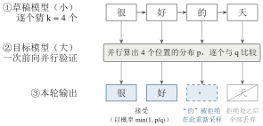

3.10 推理加速：围绕带宽与显存做文章
上一节说明，解码阶段每生成一个 token 都要把全部权重读一遍，速度受带宽限制，并发受 KV 缓存限制。那么，怎样让同一张卡跑得更快、服务更多人？本节先拆开硬件里决定推理性能的几个因素，再讲三类针对瓶颈的方法：把多个请求合成一批，提高每次读取权重的利用率；用量化减少每次要读的字节数；用投机解码让一次前向产出多个 token。显存管理、调度、注意力内核等系统层面的优化由第 4.4 节详细讨论，本节最后用一张表把各种方法与它们针对的瓶颈对应起来。结论是：解码提速的关键在于提高算术强度或减少读取的数据量；不同方法作用于不同环节，可以叠加，但不能互相替代。
3.10.1 硬件中决定推理性能的因素
衡量推理性能，要同时看单个用户的体验和整个系统的效率：TTFT 与 TPOT（第 3.9 节）衡量单个用户；吞吐量（throughput）是整个系统每秒生成的 token 总数或完成的请求数，决定一台服务器能服务多少人；并发数是能同时处理的请求数，主要受显存中能放下多少 KV 缓存限制。这些指标此消彼长：把更多请求合成一批能提高吞吐，但每个用户分到的资源减少，TPOT 会变长。实际部署通常先根据业务设定服务水平目标（Service Level Objective，SLO），例如“TTFT 不超过 1 秒、TPOT 不超过 50 毫秒”，再在满足 SLO 的前提下尽量提高吞吐。人的阅读速度大约相当于每秒十几个 token，TPOT 稳定在几十毫秒以内，用户就会觉得流畅。
决定这些指标的硬件因素有四个，表 3-14 用“推理工厂”的类比把它们放在一起。
表 3-14 决定推理性能的四个因素
| 因素 | 在推理中的作用 | 工厂类比 | 决定什么 |
|---|---|---|---|
| GPU 计算单元 | 执行矩阵乘法、注意力等计算 | 加工机器 | 算得有多快（主要影响预填充） |
| 显存或统一内存容量 | 存放权重、KV 缓存及临时数据 | 仓库和工作台 | 能不能跑、能并发多少 |
| 内存带宽 | 把权重和缓存送到计算单元 | 仓库到机器的传送带 | 数据喂得多快（主要影响解码） |
| 推理框架和驱动 | 加载模型、组织计算、调用内核 | 工厂调度系统 | 理论性能能发挥多少 |
计算单元 算力用每秒浮点运算次数（FLOPS）或每秒运算次数（OPS）衡量：1 TFLOPS \(=10^{12}\) FLOP/s，1 PFLOPS \(=10^{15}\) FLOP/s，1 EFLOPS \(=10^{18}\) FLOP/s；1 TOPS \(=10^{12}\) OP/s。FLOPS（Floating-point Operations Per Second）专指浮点运算，用于 FP32、FP16、BF16、FP8 等格式；OPS（Operations Per Second）定义更宽泛，通常用于描述 INT8、INT4 等整数或低精度计算。厂商标称的数值是指定精度下的理论峰值，必须确认是哪种精度、是否为稀疏计算下的数值；同一块卡在不同精度下的峰值可能相差数倍乃至数十倍。
显存容量 运行模型时显存中要同时容纳：模型权重、KV 缓存、推理框架自身的开销、临时计算张量和显存碎片，以及桌面显示或其他 GPU 程序的占用。显存不足时，框架可能把部分层放到系统内存，由 CPU 计算或经 PCIe 传输，称为 CPU 卸载（CPU offload），速度会大幅下降（第 3.10.5 小节）。
内存带宽 解码时单请求并行度低，计算单元容易等数据，单用户的生成速度往往与有效内存带宽密切相关（式 （3-35））。规格表给出的是理论峰值，实际有效带宽还受内存类型、频率、位宽和通道配置，推理框架与量化内核的访存方式，KV 缓存大小和上下文长度，操作系统和其他程序的内存竞争，以及功耗、温度和持续运行频率的影响。
框架和驱动 两张理论参数相近的显卡，实际速度也可能明显不同：是否支持模型使用的量化格式，模型各层能否完整放到 GPU 上，是否有针对当前架构优化的计算内核，是否支持高效的 KV 缓存管理、批处理和注意力优化，驱动、框架与操作系统是否兼容。这些软件分为几层：GPU 驱动（如 NVIDIA Driver、AMD Driver）识别硬件并提供底层接口；计算后端（CUDA、ROCm、Vulkan、Metal）向框架提供 GPU 计算能力；推理框架（llama.cpp、Ollama、vLLM、TensorRT-LLM）加载模型并组织推理流程；计算内核（CUDA Kernel、ROCm Kernel、FlashAttention）执行矩阵、量化和注意力运算。各层的关系见第 4.2.4 小节。
3.10.2 批处理：让一次读取服务多个请求
用第 4.1.3 小节的 Roofline 模型看，线性层以 16 位精度同时处理 \(B\) 个 token 时，运算量约 \(2NB\)，读取权重约 \(2N\) 字节，算术强度约为 \(B\)。预填充一次处理数千个 token，远超拐点（H100 约 295），处于计算受限区；单请求解码时 \(B=1\)，只能发挥峰值算力的约 0.3%。提高解码效率的关键，就在于提高算术强度，或减少要读取的数据量。
最直接的办法是批处理（batching）：把多个请求合并，读一次权重同时为 \(B\) 个请求各生成一个 token。在访存受限区，一个解码步的耗时约为 \[t_{\text{步}}\approx\frac{M_{\mathrm{weight}}+B\times M_{\mathrm{KV}}^{\text{每请求}}}{B_{\mathrm{mem}}}, \tag{3-40}\] 即每步读一遍全部权重，再加上所有请求各自的 KV 缓存。
例 3-8 批大小与吞吐
在显存带宽约 2.0 TB/s 的 A100-80GB 上，以 FP16 部署 LLaMA-7B（权重约 14 GB，标准多头注意力，每 token 的 KV 缓存为 K、V 两份 × 32 层 × 32 个 KV 头 × 128 维 × 2 字节，即 \(2\times32\times32\times128\times2=524\,288\) 字节）。每个请求的上下文为 2048 个 token，估算不同批大小下的解码性能。
每个请求的 KV 缓存为 \(524\,288\times2048\approx1.07\,\text{GB}\)。以 \(B=8\) 为例：每步读取 \(14+8\times1.07=22.6\,\text{GB}\)，耗时 \(22.6\div2000\approx11.3\,\text{ms}\)，系统吞吐 \(8\div0.0113\approx708\) token/s，每个用户 \(1\div0.0113\approx89\) token/s。其余批大小同理（表 3-15）。
| 批大小 \(B\) | 每步读取量 | 每步耗时 | 系统吞吐 | 每用户速度 |
|---|---|---|---|---|
| 1 | 15.1 GB | 7.5 ms | 133 token/s | 133 token/s |
| 8 | 22.6 GB | 11.3 ms | 708 token/s | 89 token/s |
| 16 | 31.2 GB | 15.6 ms | 1026 token/s | 64 token/s |
| 32 | 48.4 GB | 24.2 ms | 1323 token/s | 41 token/s |
| 48 | 65.5 GB | 32.8 ms | 1465 token/s | 31 token/s |
批大小从 1 增到 32，系统吞吐提高约 10 倍，每个用户的速度只降到约三分之一。但批越大，KV 缓存越成为读取量的主体，吞吐增长趋缓，显存也很快被 KV 缓存占满（\(B=48\) 时已用 65.5 GB）。KV 缓存的大小决定了推理系统的并发上限。
实际服务中请求随时到达、长短不一，简单地凑批会让先完成的请求空等。连续批处理（continuous batching）在每个解码步动态加入新请求、移出已完成的请求；PagedAttention 像操作系统分页那样按块管理 KV 缓存，减少显存浪费，使同样的显存容纳更多并发请求。它们的机制见第 4.4.3 小节。
3.10.3 量化：减少要读取的字节数
基本原理 量化（quantization）把数值从高精度（如 FP16）转换为更低位宽或更紧凑的表示（如 INT8、INT4）。量化后模型文件变小，显存占用和每步要读取的数据量随之下降：一是原本放不下的模型有了运行的可能；二是按式 （3-35），访存受限的解码阶段读得少了，速度随之提高（前提是内核与硬件对该格式支持良好）。代价是可能出现不同程度的精度损失，能否运行也取决于推理引擎是否支持该量化方式。
以最常见的对称线性量化为例，把一组浮点数 \(\boldsymbol{w}\) 量化为 \(k\) 位整数时，先算缩放因子 \(s\)，再把每个数除以 \(s\) 并四舍五入： \[s=\frac{\max_i\lvert w_i\rvert}{2^{k-1}-1},\qquad q_i=\mathrm{round}\Bigl(\frac{w_i}{s}\Bigr),\qquad \hat{w}_i=s\cdot q_i, \tag{3-41}\] \(q_i\) 是存储的整数，\(\hat{w}_i\) 是计算时反量化得到的近似值。
例 3-9 INT4 对称量化
把权重 \(\boldsymbol{w}=(0.42,\,-1.27,\,0.08,\,0.91)\) 量化为 INT4（取值 \(-7\sim7\)），求量化结果和误差。
1 & 缩放因子 & \(1.27\div(2^{3}-1)=1.27\div7\) & 0.181 & 式 （3-41）；1.27 是绝对值最大者，\(k=4\)
2 & 除以 \(s\) & \(0.42\div0.181\) 等 & 2.32，−7，0.44，5.02 & 每个权重除以步骤 1 的 \(s\)
3 & 四舍五入 & round(·) & 2，−7，0，5 & 存储的 4 位整数
4 & 反量化 & \(0.181\times q_i\) & 0.363，−1.270，0，0.907 & 计算时使用的近似值
5 & 绝对误差 & \(\lvert w_i-\hat{w}_i\rvert\) & 0.057，0，0.08，0.003 & 原值减近似值
数据流向找绝对值最大者 → 缩放因子 → 每个数除以 \(s\) 后取整存储 → 用时乘回 \(s\)。 绝对值较小的 0.08 被直接量化成了 0。
这个例子揭示了量化的核心难题：缩放因子由最大值决定，少数绝对值很大的“离群值”会让其余数值的精度大幅下降。假如这组数中有一个 12.7，\(s\) 会变为约 1.81，其余三个数将全部量化为 0 或 \(\pm1\)。研究发现，大模型的激活值中普遍存在这样的离群特征，且模型越大越明显。
粒度、时机与对象 为减小离群值的影响，量化按更细的粒度进行：逐张量（整个矩阵共用一个 \(s\)）、逐通道（每行或每列一个 \(s\)）、逐组（每 64 或 128 个数一组）。粒度越细精度越高，但要额外存储的缩放因子越多；QLoRA 的 NF4 就采用每 64 个数一组的分块量化。按时机，分为训练后量化（Post-Training Quantization，PTQ）和量化感知训练（Quantization-Aware Training，QAT）：PTQ 直接量化训练好的模型，只需少量校准数据，成本低，是大模型最常用的方式；QAT 在训练中模拟量化误差，让模型提前适应低精度，效果更好但要重新训练。按对象，分为仅权重量化（如 W4A16：权重 4 位、激活值 16 位，计算前把权重反量化）和权重与激活值同时量化（如 W8A8：可以直接用整数矩阵乘法）。前者主要缓解显存容量和带宽压力，适合解码；后者还能利用低精度的算力优势，适合计算受限的场景。KV 缓存也可以量化（如 FP8 或 INT8），在长上下文、高并发时容纳更多请求。
代表性方法 下面几种方法都在对付离群值，做法不同：
LLM.int8()[47]：把少量离群维度保留为 16 位计算，其余用 INT8；
SmoothQuant[48]：通过数学上等价的缩放，把激活值的离群“难度”部分转移到权重上，使二者都易于量化，实现 W8A8；
GPTQ[49]：逐层量化权重，用二阶信息（Hessian 矩阵）补偿量化误差，能在数小时内把千亿参数模型量化到 3～4 位；
AWQ[50]：根据激活值大小识别出约 1% 的“显著权重”，通过逐通道缩放加以保护，在 4 位下保持较高精度；
NF4：按正态分布分位数设置量化等级（第 3.7 节）。
量化后的权重大小 表 3-16 列出 7B 模型在不同精度下的权重大小，按式 （4-1） 计算。注意这只是权重，实际运行还要加 KV 缓存、临时张量和框架开销（式 （3-37））。
表 3-16 7B 模型在不同精度下的权重大小
| 数据类型 | 每参数 | 7B 权重 | 说明 |
|---|---|---|---|
| FP32 | 4 字节 | 约 28 GB | 训练时的主权重精度，推理很少使用 |
| FP16 / BF16 | 2 字节 | 约 14 GB | 推理的“原始精度” |
| FP8 / INT8 | 1 字节 | 约 7 GB | 精度损失通常很小 |
| INT4 / NF4 | 0.5 字节 | 约 3.5 GB | 需要较好的量化方法，精度略有下降 |
| GGUF Q4_K_M | 约 0.6 字节 | 约 4.1 GB | llama.cpp 常用格式，平均约 4.8 位，含缩放因子等开销 |
辨析
为什么量化以后“我的电脑突然能跑模型了”，而且还更快了？FP16 的 7B 模型约 14 GB，超过大多数笔记本的显存；4 位量化后只需约 4 GB，加上 KV 缓存等开销，8 GB 显存或 16 GB 统一内存的设备就能运行；每步要读的数据少了，解码速度反而更快。代价是一定的精度损失：通常 8 位几乎无损，4 位在多数任务上损失不大，3 位及以下损失明显。量化与 QLoRA 中的量化是同一类技术，前者用于部署，后者用于降低微调时底座的显存。
3.10.4 投机解码：让一次前向产出多个 token
批处理提高的是系统吞吐，却无助于降低单个用户的延迟。能否让一个请求的解码也“并行”起来？投机解码（speculative decoding）[51]的出发点有两个：解码受带宽限制，大模型一次前向处理 1 个 token 和处理 5 个 token 的耗时相差无几；很多 token 是“容易猜”的，小模型也能猜对。如图 3-23，每一轮包括三步：
用小而快的草稿模型（draft model）连续生成 \(k\) 个候选 token；
把这 \(k\) 个 token 一次性交给大的目标模型，在一次前向计算中并行算出每个位置上目标模型的分布，逐个判断是否接受；
从第一个被拒绝的位置起，丢弃其后所有候选，由目标模型在该位置重新采样一个 token。

图 3-23 投机解码的一轮。草稿模型逐个猜出 4 个 token；目标模型只做一次前向，就并行算出这 4 个位置的分布并逐个判定；从第一个被拒绝的位置起丢弃后续候选，并由目标模型在该位置重新采样。本例一次前向产出 3 个 token（“很”“好”“。”）
设草稿模型给某个 token \(x\) 的概率为 \(q(x)\)，目标模型给的概率为 \(p(x)\)。投机采样以概率 \(\min\bigl(1,p(x)/q(x)\bigr)\) 接受该 token；若拒绝，就从按 \(\max\bigl(0,p(x)-q(x)\bigr)\) 归一化的分布中重新采样。可以证明，这样得到的输出分布与目标模型单独生成时完全相同：投机解码只加速，不改变结果。若每个候选被接受的概率约为 \(\alpha\)，一轮提出 \(k\) 个候选，则目标模型每做一次前向，平均产出的 token 数为 \[\mathbb{E}[\text{每轮产出的 token 数}]=\frac{1-\alpha^{k+1}}{1-\alpha}. \tag{3-42}\] 例如 \(\alpha=0.8\)、\(k=4\) 时，\((1-0.8^{5})\div(1-0.8)=(1-0.328)\div0.2\approx3.36\) 个。扣除草稿模型的开销后，实际加速通常在 2～3 倍。除独立的小模型外，还可以在大模型上增加几个额外的预测头（如 Medusa、EAGLE），或利用训练时自带的多 token 预测模块（如 DeepSeek-V3 的 MTP[18]）生成候选。
3.10.5 其他手段与系统层优化
CPU 卸载 显存放不下整个模型时，框架可以只把一部分层放在 GPU 上，其余留在系统内存，由 CPU 计算或在需要时经 PCIe 传到 GPU；例如 llama.cpp 允许指定放到 GPU 上的层数。模型因此“能跑起来”，但速度大幅下降：PCIe 4.0 x16 的单向带宽约 32 GB/s，系统内存带宽通常也只有每秒几十到一百多 GB，都比显存带宽低一个数量级以上。
模型压缩 除量化外，还可以从根本上减小模型：剪枝（pruning）去除不重要的权重（非结构化剪枝）或整个注意力头、通道、层（结构化剪枝），后者更容易在硬件上获得实际加速；知识蒸馏（knowledge distillation）[52]用大模型（教师）的输出分布或生成的数据训练小模型（学生），许多开源小模型借此获得了远超同规模模型的效果；低秩近似用低秩矩阵近似原权重矩阵，权重共享让不同层共用一组参数，都能减少参数量。
系统层优化（概述） 推理引擎还在系统层面做了大量优化，第 4.4 节有详细讨论，这里只列出它们解决的问题：连续批处理减少请求空等；PagedAttention 减少 KV 缓存的显存浪费，并让相同前缀的请求共享缓存块，在此基础上的前缀缓存（如 SGLang 的 RadixAttention，用基数树记录各请求共享的前缀）直接复用已算过的前缀，跳过这部分预填充、降低 TTFT；FlashAttention[46] 分块计算注意力，避免把完整的注意力矩阵写回显存，是精确计算而非近似；分块预填充（chunked prefill）把长提示切成小块，与其他请求的解码步交错执行，避免长提示“卡住”别人的解码；预填充与解码分离（PD 分离）[53]用不同的 GPU 集群分别负责两个阶段，预填充完成后把 KV 缓存传给解码集群，两个阶段可以各自选择硬件和并行策略。
表 3-17 把本节和第 4 章的各种方法与它们针对的瓶颈对应起来。
表 3-17 推理优化技术与其针对的瓶颈
| 技术 | 针对的瓶颈 | 主要改善 | 是否影响输出 |
|---|---|---|---|
| 批处理 / 连续批处理 | 解码阶段带宽利用率低 | 吞吐 | 否 |
| PagedAttention | KV 缓存显存浪费 | 并发、吞吐 | 否 |
| 前缀缓存 | 重复的预填充计算 | TTFT | 否 |
| GQA / MQA | KV 缓存过大 | 并发、长上下文 | 是（需在训练时采用） |
| FlashAttention | 注意力计算的显存读写 | 速度、长上下文 | 否（精确计算） |
| 量化 | 显存容量、带宽 | 能否运行、TPOT | 有轻微影响 |
| 投机解码 | 单请求解码串行 | TPOT | 否（分布不变） |
| CPU 卸载 | 显存容量不足 | 能否运行 | 否，但速度大幅下降 |
| 分块预填充 / PD 分离 | 预填充与解码互相干扰 | TPOT 稳定性、吞吐 | 否 |
本节要点
推理性能由算力、显存容量、带宽和软件栈共同决定；解码提速靠提高算术强度或减少读取量。
批处理提高吞吐，但 KV 缓存决定并发上限；量化减少读取量，难点是离群值；投机解码不改变输出分布。
案例进度：课程问答模型部署时，BF16 约可同时服务 23 个对话，改用 4 位量化后约 60 个以上（第 3.12 节）。